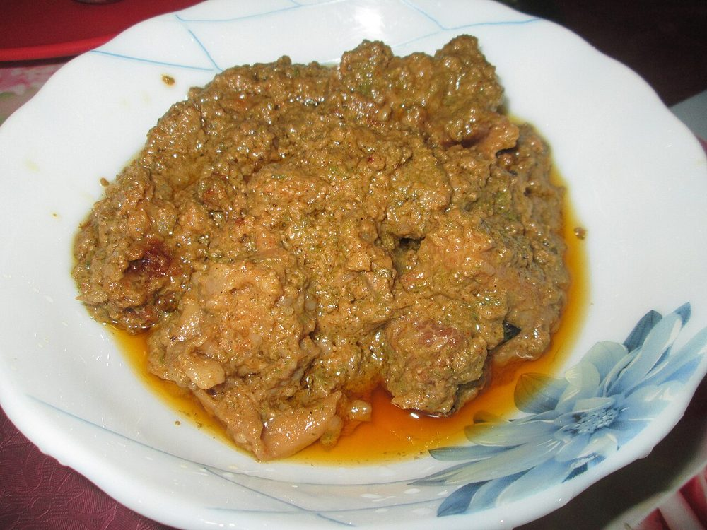

Allergens: none of the common ones
Ingredients
Quantities for 4.
- 700g, bone-in, cut into 4cm pieces Mutton
- 2 large bunches, about 100g with tender stalks Coriander Leavesthe body of the masala, not a garnish
- 1/2 cup leaves, packed Mint
- 4, slit Green Chilli
- 14 cloves: 8 for the paste, 6 sliced Garlic
- 5cm piece, roughly chopped Ginger
- 2 medium, finely sliced Onion
- 3 medium, chopped Tomato
- 4 tbsp Neutral Oil
- 1 tsp Turmeric
- 1 tsp Chilli Powder
- 1 tbsp Coriander Powder
- 1 tsp, to finish Garam Masala
- 1/2, juiced Lemonoptional
- to taste Salt
- 1 cup, hot Water
Cookware
stovetop, pressure cooker, blender
Before you start
- Bring the mutton to room temperature 30 minutes before cooking. Cold meat straight from the fridge seizes and stays tough.
- Wash the coriander and mint and shake them properly dry. Wet greens water down the paste and it will never fry.
- Seyal means cooked in its own thick masala, so keep the water measured. This is not a gravy you ladle.
Method
- Blend the coriander, mint, green chilli, 8 garlic cloves and the ginger with 3 tbsp water to a coarse green paste.Stop while it is still slightly grainy. A smooth puree turns muddy brown once it hits the pan.
- Heat the oil in the pressure cooker and fry the 6 sliced garlic cloves for 40 seconds, until pale gold and fragrant.
- Add the onion and cook 8 minutes over medium heat until soft and translucent.Do not brown it. Sindhi seyal wants sweetness from soft onion, not the deep caramel of a bhuna curry.
- Add the mutton, turmeric, chilli powder, coriander powder and salt. Fry over high heat 10 minutes until the meat has released its juices and taken them back, and the pan looks dry.
- Stir in the tomato and cook 6 minutes, until it collapses and oil beads at the edge of the mass.
- Add the green paste and fry 5 minutes, stirring, until the colour shifts from bright grass green to deep olive.This is the step people rush. Underfried coriander tastes raw and grassy through the whole dish.
- Pour in the hot water, close the cooker and cook on high pressure 18 minutes, about 4 whistles. Let the pressure fall on its own.
- Open, and boil uncovered 6-8 minutes until the masala clings to the meat and there is no loose liquid in the pan.The fork test: drag one through and the gravy should close slowly behind it.
- Stir in the garam masala and lemon juice, cover and rest 5 minutes off the heat before serving with phulka.
Storage
Keeps 3 days refrigerated and tastes better on day two. Reheat covered over low heat with 2 tbsp water; freezes well for a month.
Nutrition Good estimate
| Per serving450 g | Per 100 g | |
|---|---|---|
| Calories | 419+ kcal | 94+ kcal |
| Protein | 41.0+ g | 9+ g |
| Carbohydrate | 23.6+ g | 5+ g |
| of which sugars | 7.5+ g | 2+ g |
| Fibre | 7.1+ g | 2+ g |
| Fat | 18.8+ g | 4+ g |
| of which saturated | 2.8+ g | 1+ g |
| of which unsaturated | 14.4+ g | 3+ g |
The + means ingredients given to taste rather than by weight are counted as zero, so the true figure is a little higher than shown. Worked out from the listed quantities; most of the ingredient list could be weighed. Ingredients given to taste rather than by weight are counted as zero, so the real figure is a little higher than this. The + says so. Some ingredients have no exact match in the nutrient database and use the nearest equivalent: garam masala, mutton. Estimated from raw ingredients using USDA FoodData Central. Cooking changes are not modelled, and added salt is excluded, so sodium is not given.
Recipe v1.0.0, last updated 2026-07-31. Curated for Khaana and kept under version control.